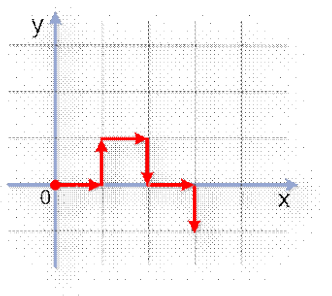

Cho lưới nguyên Oxy. Điểm nguyên (x1, y1) và điểm nguyên (x2, y2) được gọi là kề nhau nếu thỏa điều kiện |x1– x2| + |y1– y2| = 1. Một robot ban đầu đứng tại gốc tọa độ. Ở mỗi bước, robot sẽ di chuyển sang một điểm nguyên kề với vị trí hiện tại. Từ bước di chuyển thứ hai trở đi, robot có thể đi tiếp theo hướng cũ, rẽ sang trái, rẽ sang phải, hay trở lại vị trí trước đó. Trong ví dụ ở hình bên, từ ô (0,0), robot đi đến (1,0), rẽ trái sang ô (1,1), rẽ phải sang ô (2,1), rẽ phải sang ô (2, 0), rẽ trái sang (3,0) cuối cùng rẽ phải sang ô (3, - 1).
Yêu cầu: Cho tọa độ các điểm nguyên mà robot đã đi qua. Hãy đếm xem robot đã rẽ phải bao nhiêu lần.
Dữ liệu nhập: gồm các dòng sau:
- Dòng đầu tiên chứa 1 số nguyên dương n (với 2 ≤ n ≤ 10.000) là tổng số điểm nguyên mà robot đã đi qua (kể cả vị trí xuất phát là gốc tọa độ).
- Dòng thứ i trong n dòng tiếp theo (1 ≤ i ≤ n) chứa 2 số nguyên xi và yi là tọa độ điểm nguyên mà robot đã đi qua. Các số trên cùng một dòng được ghi cách nhau bởi 1 khoảng trắng.
Dữ liệu xuất:
- Là số nguyên xác định số lần robot rẽ phải.